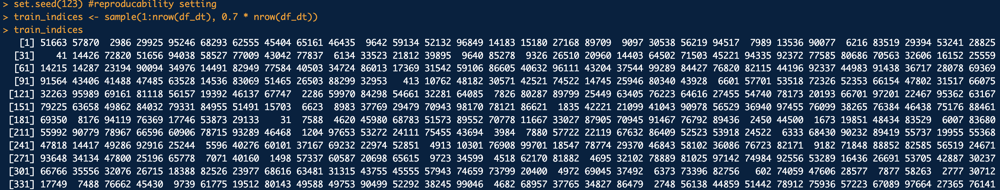

One type of supervised learning, decision trees, requires additional preprocessing of preprocessed data. The procedure to change the data so that the model built on the decision tree can understand and analyze the data correctly can significantly impact the results of the analysis. To this end, we perform the following preprocessing procedures.
In general, the more data you have, the more time it takes to build a decision tree. Decision trees evaluate multiple attributes for each data point and recursively explore the data to find the best split, so more data can increase the time it takes to train the model. For this reason, decision tree modeling is performed by randomly sampling only 100,000 data points out of approximately 600,000 rows of data.
To perform supervised learning decision trees, the data must first be labeled. In this project, one of the main objectives is to analyze the characteristics of vehicles and use them to predict the price of a vehicle. Therefore, in this analysis, the label is defined as the price of the vehicle. Decision trees can perform classification and regression methods, but classification is used in this analysis. To do this, it is necessary to convert price, a continuous numeric type, into a categorical type. In this case, price is categorized into three categories: low, medium, and high. This categorical conversion is performed by discretization using the average used vehicle price information for 2021. After researching the average used car price in 2021, the median price is approximately $30,000. Based on this, the categories of low and high are usually defined. In addition, reducing the complexity of the model by removing unnecessary variables and selecting essential variables can improve the model's performance and increase its interpretability. For example, enhancing the quality of the decision tree involves removing data such as VINs, vehicle descriptions, etc., or categorical variables with too many categories, such as vehicle model, vehicle color, etc. Categorical variables such as fuel type and transmission type are converted to continuous numeric types using one-hot encoding to improve performance. One-hot encoding is a vector representation of words where the size of the word set is the dimension of the vector, the index of the word you want to represent is assigned a value of 1, and the other indexes are assigned 0. This way, you can preprocess the data into a suitable data type for performing decision trees. The dataset below shows the dataset after the preprocessing above.
| back_legroom | city_fuel_economy | daysonmarket | engine_cylinders | engine_displacement | fleet | frame_damaged | franchise_dealer | front_legroom | fuel_tank_volume | has_accidents | height | highway_fuel_economy | horsepower | isCab | is_new | length | maximum_seating | mileage | owner_count | salvage | savings_amount | seller_rating | theft_title | wheelbase | width | year | rpm | torque_lbft | transmissionA | transmissionCVT | transmissionDual Clutch | transmissionM | fuel_typeBiodiesel | fuel_typeDiesel | fuel_typeFlex Fuel Vehicle | fuel_typeGasoline | fuel_typeHybrid | wheel_system4WD | wheel_system4X2 | wheel_systemAWD | wheel_systemFWD | wheel_systemRWD | body_typeConvertible | body_typeCoupe | body_typeHatchback | body_typeMinivan | body_typePickup Truck | body_typeSedan | body_typeSUV / Crossover | body_typeVan | body_typeWagon | label |
|---|---|---|---|---|---|---|---|---|---|---|---|---|---|---|---|---|---|---|---|---|---|---|---|---|---|---|---|---|---|---|---|---|---|---|---|---|---|---|---|---|---|---|---|---|---|---|---|---|---|---|---|---|
| 35.0 | 16 | 4 | 6 | 3800 | FALSE | FALSE | TRUE | 45.7 | 20.3 | FALSE | 58.3 | 25 | 311 | FALSE | FALSE | 196.5 | 5 | 42750 | 1 | FALSE | 663 | 3.666667 | FALSE | 118.5 | 74.4 | 2017 | 6000 | 293 | 1 | 0 | 0 | 0 | 0 | 0 | 0 | 1 | 0 | 0 | 0 | 1 | 0 | 0 | 0 | 0 | 0 | 0 | 0 | 1 | 0 | 0 | 0 | Moderate |
| 38.9 | 25 | 13 | 4 | 2500 | FALSE | FALSE | TRUE | 41.6 | 17.0 | FALSE | 57.9 | 35 | 178 | FALSE | FALSE | 190.9 | 5 | 23142 | 1 | FALSE | 215 | 4.136364 | FALSE | 109.3 | 71.7 | 2016 | 6000 | 170 | 1 | 0 | 0 | 0 | 0 | 0 | 0 | 1 | 0 | 0 | 0 | 0 | 1 | 0 | 0 | 0 | 0 | 0 | 0 | 1 | 0 | 0 | 0 | Moderate |
| 38.3 | 20 | 13 | 6 | 3500 | FALSE | FALSE | TRUE | 42.0 | 16.0 | FALSE | 65.0 | 28 | 279 | FALSE | FALSE | 184.4 | 5 | 68717 | 1 | FALSE | 2346 | 3.137931 | FALSE | 105.7 | 73.7 | 2017 | 6200 | 252 | 1 | 0 | 0 | 0 | 0 | 0 | 0 | 1 | 0 | 0 | 0 | 0 | 1 | 0 | 0 | 0 | 0 | 0 | 0 | 0 | 1 | 0 | 0 | Moderate |
| 35.3 | 17 | 28 | 6 | 3700 | FALSE | FALSE | TRUE | 44.3 | 20.0 | FALSE | 62.7 | 24 | 325 | FALSE | FALSE | 186.8 | 5 | 42620 | 4 | FALSE | 1674 | 4.692308 | FALSE | 113.4 | 71.0 | 2016 | 7000 | 267 | 1 | 0 | 0 | 0 | 0 | 0 | 0 | 1 | 0 | 0 | 0 | 1 | 0 | 0 | 0 | 0 | 0 | 0 | 0 | 0 | 1 | 0 | 0 | Moderate |
| 41.1 | 18 | 22 | 6 | 3300 | FALSE | FALSE | TRUE | 40.9 | 21.1 | FALSE | 69.1 | 25 | 276 | FALSE | FALSE | 201.4 | 8 | 21536 | 1 | FALSE | 1088 | 3.833333 | FALSE | 120.5 | 89.3 | 2018 | 6000 | 248 | 1 | 0 | 0 | 0 | 0 | 0 | 0 | 1 | 0 | 0 | 0 | 0 | 1 | 0 | 0 | 0 | 0 | 1 | 0 | 0 | 0 | 0 | 0 | Moderate |
| 37.6 | 18 | 26 | 6 | 3500 | FALSE | FALSE | TRUE | 40.5 | 20.0 | FALSE | 71.3 | 24 | 296 | FALSE | FALSE | 200.2 | 7 | 43196 | 1 | FALSE | 1326 | 4.177778 | FALSE | 119.3 | 78.1 | 2017 | 6200 | 263 | 1 | 0 | 0 | 0 | 0 | 0 | 0 | 1 | 0 | 0 | 0 | 1 | 0 | 0 | 0 | 0 | 0 | 1 | 0 | 0 | 0 | 0 | 0 | Moderate |
The table above is the dataset on which preprocessing was performed. On the right side of the table above, the column names that are a combination of the variable name and the category name of the data are the columns created as a result of one-hot encoding. Moreover, the car price information defined as label is located on the rightmost side of the table.
To evaluate the performance of machine learning models, including decision trees, and to ensure generalization, data is split into a training set and a test set. This split helps to evaluate the generalization ability and determine how well the model will perform when applied to new data. The data is split randomly, with a 7:3 split between training and test data. To split the data in this way, a function called 'sample' is utilized to perform random sampling. This function randomly samples the dataset to the given 0.7 ratio and returns an index of the sampled dataset. Using these indices, the original dataset is split into a training and test set. The command below shows the index assigned to the training dataset. The index is extracted from the original data, the df_dt dataset, and the training dataset is defined as a dataset named df_dt_train, with the remaining data as the test data, df_dt_test. It makes the training and test datasets have a disjoint relationship.
The images below show simple information about the partitioned training dataset (left) and test dataset (right).
The main reason to divide your data into a training set and a test set is to prevent overfitting and ensure that you can trust your model's performance. Overfitting is when a model is overfitted to the training data and fails to generalize to new data. When a model is overfitted, it can perform well on training data but poorly on actual data. To avoid this overfitting and evaluate the model, you need to split your data into a training and test set. The training set is used to train the model, and the test set is used to evaluate the performance of the trained model. This split prevents the model from overfitting the training data. In other words, if a model performs well on the training data but poorly on the test data, this could indicate that the model is overfitted. Therefore, by training and evaluating a model on a separate training set and test set, you can measure the model's ability to generalize and understand its ability to predict new data.